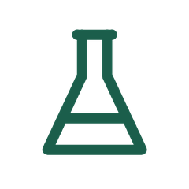
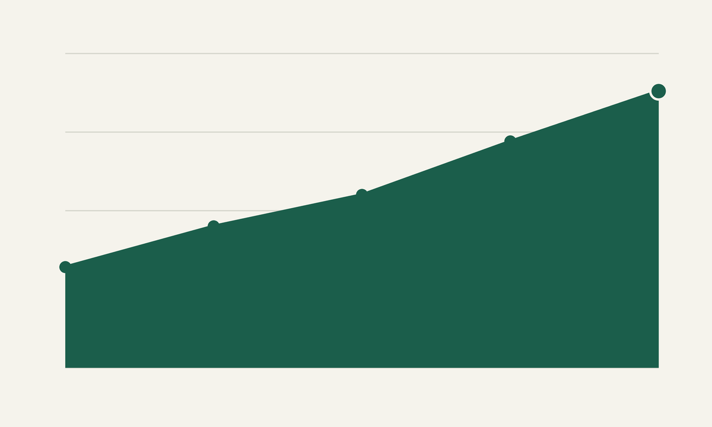
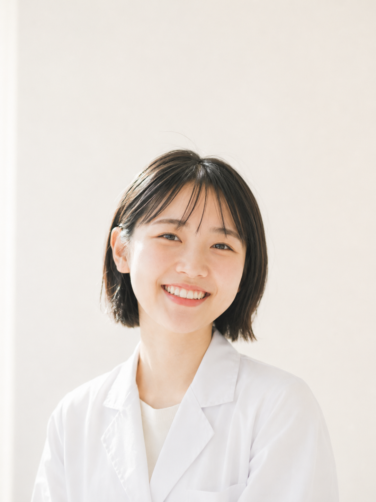
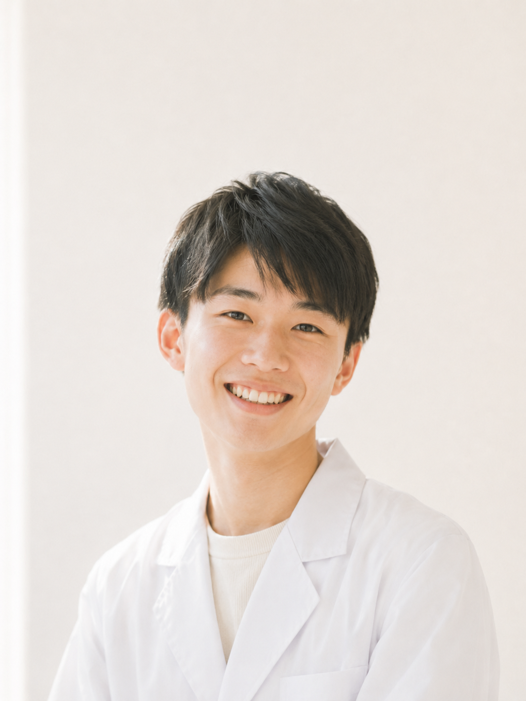
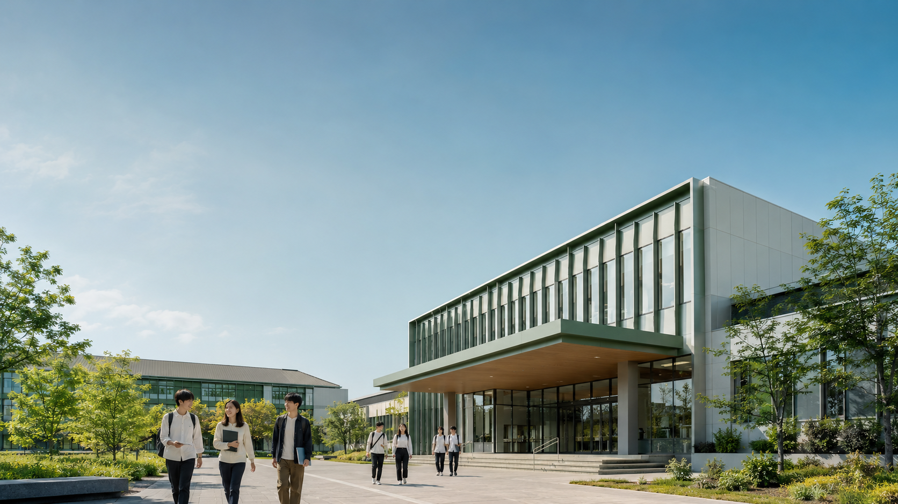

実務実習支援室
実務実習支援室が、国家試験対策から就職相談まで一人ひとりに伴走します。
翠陵薬科大学 オープンキャンパス 2026
合格率92.3%を支える150名の少人数教育
7/26(日)・8/23(日) 開催・参加無料・保護者同伴OK
授業についていけるか不安…
6年間の学費、高くない？
一人で参加するのは緊張する
行ったら勧誘されそうで気が引ける
その答え、オープンキャンパスに
すべてあります。
1学年定員でみる「顔の見える」規模
定員が少ないほど、教員が一人ひとりに向き合えます。
1学年の定員は150名。大手大学（1学年400名超）の半分以下です。だからこそ教員は一人ひとりの顔と名前を覚え、つまずきにすぐ気づけます。その積み重ねが、5年連続で全国平均を上回る国家試験合格率92.3%につながっています。
詳しい実績を見る調剤シミュレーション室では、1グループ最大◯名で教員が全員の手元を確認します。わからないまま次に進むことがありません。
実務実習支援室が、国家試験対策から就職相談まで一人ひとりに伴走します。
在宅医療体験ルームで、将来の薬剤師像を早い段階から具体的にイメージできます。
1学年定員150名。大手大学（1学年400名超）にはできない距離で、一人ひとりを見守ります。

調剤シミュレーション室・在宅医療体験ルームを完備。国公立大学より実践的に学べる環境。
オープンキャンパスも在学生スタッフが案内します。地方大学にはない情報発信力と近さで、いつでも相談できます。

国家試験合格率は5年連続で全国平均（約85%）を上回る92.3%。卒業生の薬局・病院・製薬企業への就職率は98.7%。開学60年、卒業生は累計2万3,000人を超えました。全学生の約25%が給費生・奨学金を利用しています。
※実績数値は翠陵薬科大学 公式データ・2026年度実績に基づく。
入学前は「6年間ずっと勉強漬けで大変そう」と身構えていました。でも実際は、少人数のゼミで先生との距離が近く、わからないところをその場で質問できます。国家試験対策も一人ひとりの進み具合に合わせてくれるので、置いていかれる不安がありません。今は薬剤師になる自分が具体的に想像できます。薬学部3年

オープンキャンパスで受けた模擬授業がきっかけで、この大学に決めました。在学生の先輩が案内してくれて、キャンパスの雰囲気や実習室を実際に見られたことで「ここで6年間頑張れそう」と思えたんです。入学後も先輩がよく声をかけてくれて、一人暮らしの不安もすぐに解消しました。薬学部1年

少人数だからこそ、実験や実習で先生がしっかり手元を見てくれます。大人数の講義では聞きづらい基礎的な質問も、ここでは気軽にできる雰囲気です。同じ学年の仲間とも自然と仲良くなれて、テスト前には教え合いながら乗り越えています。勉強は大変ですが、一人じゃないと感じられる毎日です。薬科学部2年
※写真はイメージです。
先輩の話を直接聞いてみる途中参加・途中退出も可能です。すべてに参加する必要はありません。
オープンキャンパス参加費
無料
要事前予約・保護者同伴可
薬学部（6年制）初年度納入金 約190万円、以降年額約160万円。
薬科学部（4年制）初年度納入金 約150万円、以降年額約130万円。
成績優秀者は授業料一部〜全額免除（毎年約20名採用実績）。
私服で問題ありません。制服でのご参加も歓迎です。
大丈夫です。オープンキャンパスは学力を問う場ではありません。
毎回多くの方が一人で参加されています。在学生スタッフがサポートします。
はい、保護者の方の同伴・単独参加も歓迎です。
いいえ。見るだけ・雰囲気を知るだけの参加も歓迎しています。
入試方式によって対応可能です。個別相談でご案内します。
開催2週間前までの予約で、オリジナル『学部選びガイドブック』をプレゼント
8月の体験枠は残り12名（毎月上限20名）
